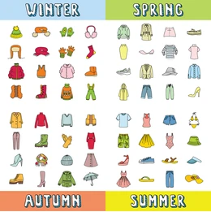

Outfitter for All Seasons!
To everthing, there is a season, that's why I created a demo page that will change the seasons, using jQuery. 
Context: This scenario is built in a single web page for seasonal wear outfitters, Eddie Browser. They want content that will change based on the season, including a look and feel, logo etc.
Deliverables: Using jQuery, I created a page that promotes a unique look and feel for each of the four seasons by changing a page in the 4 following areas: